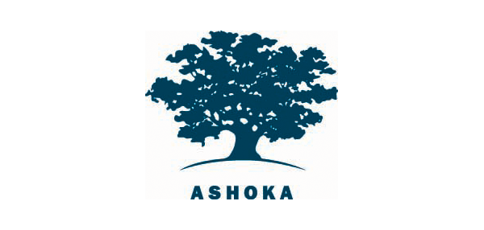

Simplon-AUF E-SHOP
Qui sommes-nous?
Nous sommes un réseau de fabriques numériques et inclusives en France et à l’étranger. Nous avons formé plus de 2000 apprenants aux métiers du numérique depuis 2013. Nous sommes une entreprise sociale et solidaire. Nous voulons faire du numérique un véritable levier d’inclusion et révéler des talents parmi des publics peu représentés dans le secteur. Nous conseillons les entreprises dans leur transformation digitale et parfois nous réalisons leurs sites et leurs applications.
NOS CONVICTIONS
Le numérique est partout mais pourtant ce n’est pas toujours un langage naturel et inné. La fracture entre ceux qui le parlent et le manipulent avec aisance et les autres est toujours aussi vive. C’est pourquoi nous voulons mettre le code dans toutes les mains. Aujourd’hui, nos apprenants vivent dans la Meuse, à Boulogne-sur-Mer, à Aulnay ou même en Roumanie. Nos apprenants sont des apprenantes. Nos apprenants sont des personnes réfugiées, des adolescents en marge du système scolaire, des enfants, des chômeurs longue durée ou encore des employés en reconversion. Et demain, ils/elles seront développeurs.se.s web, formateur.trice.s, chef.fe.s de projet digital, entrepreneur.se.s, etc.
Nos engagements
Social et Solidaire
Nous sommes une entreprise sociale agréée solidaire (ESUS) avec des engagements forts en termes de lucrativité limitée, de gouvernance participative et d’écarts de salaires. Chez nous, le salarié en haut de l’échelle ne peut pas gagner plus de 10 fois le SMIC, et 7 fois le SMIC pour la moyenne des 5 plus hauts salaires. Simplon.co soutient les associations, les porteurs de projets solidaires ou les ONG à se développer et à se digitaliser. Nous sommes aussi sociétaires de Sociétés Coopératives d’Intérêt Collectif (SCIC) porteuses de projets solidaires comme le label Emmaüs, la boutique en ligne du réseau Emmaüs, ou de la MedNum, la coopérative des acteurs de la médiation numérique qui oeuvre au quotidien pour une société numérique toujours plus inclusive. Notre écosystème ESS c’est aussi : Ashoka : membre du réseau depuis 2015, nous nous investissons pour enrichir la coopération entre les membres, pour promouvoir l’utilisation du numérique au service du réseau et construire ensemble une “French Tech de l’innovation sociale.” La France S’Engage : lauréat de la première promotion en 2014, nous avons oeuvré à faire que la fondation soit reconnue d’utilité publique et nous sommes aujourd’hui au comité de sélection des projets. Mouves : en plus d’être adhérant depuis sa création, le président et co-fondateur de Simplon, Frédéric Bardeau est membre du bureau.